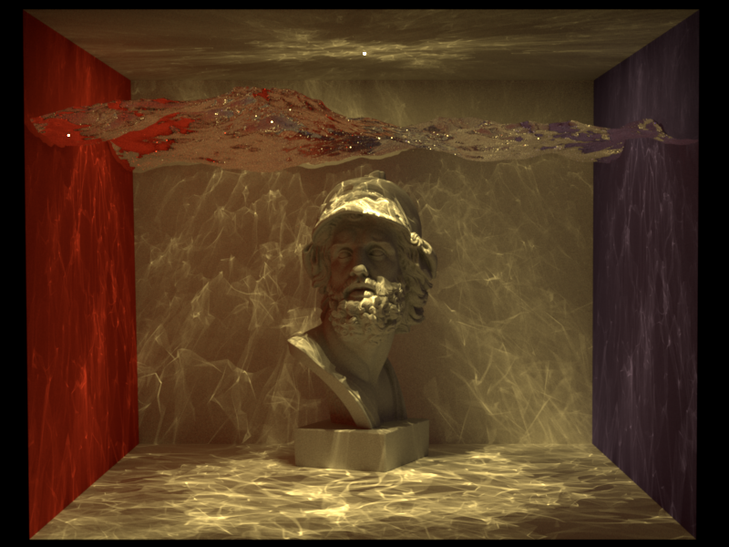
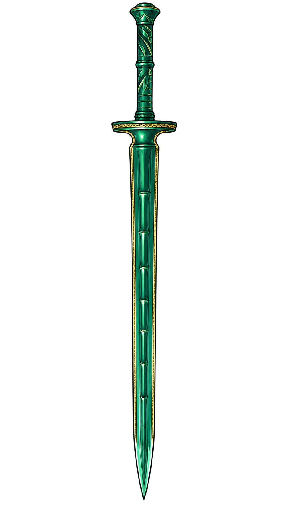

Bidirectional Path Tracing in Nori
A learning-oriented BDPT reference built on the Nori educational renderer, including the minimal light-image accumulation and infrastructure extensions required by the implementation.
View repository
Skip to contentSystems built to make rendering ideas inspectable and everyday image work more direct. Projects remain separate from the publication record.
Open implementations for learning, experimentation, and practical use.

A learning-oriented BDPT reference built on the Nori educational renderer, including the minimal light-image accumulation and infrastructure extensions required by the implementation.
View repositoryA compact image toolkit for converting supported image formats with a single line of code.
View repository